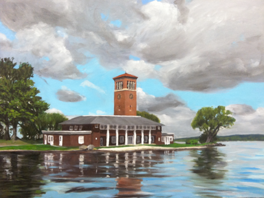

Chautauqua Art Challenge 2012
The Challenge
A renaissance man or polymath is a person who is skilled in multiple fields or multiple disciplines, and who has a broad base of knowledge. The term renaissance man is largely based on the various artists and scholars of the European Renaissance. Hence: THE CHALLENGE!
Sixteen artists from around the world will compete over six days in a variety of art mediums including chainsaw carving, ceramics, ice, mural painting, cardboard/fabric sculpture, and performance. Participants will compete head-to-head in day long competitions. They hail from from Germany, Wales, California, Oregon, Colorado, New York, and Pennsylvania.
Competion Outlines
WOOD / SUBJECT / ELEMENT
Artists will compete for six hours to complete a chainsaw sculpture in an approx. two foot by five foot white pine log. Hand and power tools may also be used to complete the project. Color may be added.
CLAY SCULPTURE/ SUBJECT/ ELEMENT
Artists will compete for six hours to complete a clay sculpture. Fifty pounds of sculpture clay will be provided to each artist to construct their sculpture. Tools will be available to each artist. Clay may be made into slabs and coils before the start of the competition.
ICE / SUBJECT / ELEMENT
Artists will compete for six hours to complete an Ice sculpture. One 20X40X10 inch slab will be provided to each artist
MURAL PAINTING /SUBJECT / ELEMENT
Artists will compete for six hours to complete a painted mural. A four by eight panel will be painted using acrylics and or spray cans. Artist’s preliminary sketches will also be judged and added to the final painting score.
CARDBOARD-FABROC/ SUBJECT / ELEMENT
Artists will compete for six hours to complete a cardboard/fabric sculpture. Tools, supplies and acrylic paints will be provide and available to complete the sculpture.
PERFORMANCE / SUBJECT/ ELEMENT
Artists will perform a stage act such as singing, playing an instrument, poetry, comedy or other performance orientated talents. Performances will be from three minutes to thirty minutes duration.
Additionally artists must submit an artist statement in poetic form to be judged along with the performance category.
Judging
Three to five Judges will be selected for each category with some judges serving on multiple categories. Judging criteria will be developed from a basic format to suite each of the medium categories. Judges will be selected from the art community at large with hopes of recruiting known artists in each of the mediums.Additional Insights
The Glass Bead Game is a term coined by Herman Hesse, in his book Magister Ludi, the Glass Bead Game, Hesse explains the game as developing out of Musicology and Mathematics into a game woven as a symphony of knowledge and idea. The Glass Bead Game is a metaphor for a tradition of philosophical Cosmology. This philosophical cosmology is an expression of the fundamental system of order existing in the universe. These systems of Cosmology are usually expressed in symbolic forms such as Geometry, Hieroglyphics, Mythology, Harmonics and Astronomy. The Glass Bead Game is the Artistic, Philosophical manipulation of the symbolic form which express these systems of knowledge.
To introduce the “chance” into the competition a dice game could be added to win a free score in a category. (who knows??)
As a new type of contest for all of us and in a new location, there could be some unforeseen changes. We hope to creatively deal will all obstacles.
Chautauqua is an ideal environment for an adventure in the Arts. Especially this type of event.
The Chautauqua Institute serves the region as a cultural and religious hub since the civil war. Please look them up on line to get a feel for the ambience of the area.
Meet the Competitors
 |
Rick BoniRick Boni, is the owner of Appalachian Arts Studio and founder of the award winning event, The Ridgway Chainsaw Carvers Rendezvous. For his latest event, he will be one of the judges in the Chautauqua Art Challenge. Rick studied at the Art Institute of Pittsburgh and the Columbus College of Art and Design, pursuing a career in graphic art before discovering his passion for chainsaw carving. Rick has been carving for over two decades. In that time, he has carved at and judged events and competitions across the United States and Europe. He was invited to teach chainsaw carving in Japan and Norway, and has been featured on TV, radio, and in many publications. He doesn't stop there! He is also a skilled painter and poet and enjoys writing music and lyrics. |
Mark TyoeMark Tyoe from the Adirondacks is a chainsaw carver and a musician. Tyoe is well known in the carving community for his depiction of black forest carvings. He was one of the early competitors of Tupper Lake, which was one of the first chainsaw carving events on the east coast. With his hands he can carve, and with his fingers he brings about the blues through his guitar. |
|
Luke SassaniLuke Sassani is from Pennsylvania, where he started as an art teacher, oil painting and plein air style. His abilities have lent themselves to inspire his carvings. " I enjoy the similarities between the many mediums and forms of art but none compare to the speed in which chainsaw carvers produce and the speed in which they react to what is happening in front of them." |
|
Simon O'RourkeSimon O'Rourke, from North Wales, is an illustration graduate turned arborist who saw the opportunity to pursue 3D art when he picked up the chainsaw! From playing round with carving as a hobby, Simon found the opportunity to compete on an international level and has had a successful time in many competitions. His other pastimes such as song writing and guitar playing make this competition the perfect combination of events for him! |
|
Thor"Hello my name is Thor and I'm from earth. I'm a cartoonist, painter, sculptor, and writer touring the world by chainsaw, a bit of a chainsaw gypsy. Originally from Kent Washington creation has taken me from Japan to Germany and England and all across the United States. I've had the privilege of meeting and creating with some of the greatest artists of our time and look forward to creating for y'all, keep smiling!" |
|
|  |
Trevor TwistTrevor Twist is the owner and creative director of the Mitchell School of Fine Arts in Baltimore, Maryland. He is an accomplished painter and also tutors at the Chautauqua Institution. His work primarily consists of figurative painting and landscapes and has been exhibited internationally. He will be a great addition to the mix of artist in this event. |
 |
Cima BueCima Bue from New York City is always creative and always suprising. He will keep the audience entertained with his unique abilities to light up the element of nature. When asked for his bio Cima stated " He lives in the moment and creates what is in hand. |
Scott DowScott Dow hails from Pennsylvania - His passion is studying the human form as created by master artists from the Renaissance and from Greece. Often, he sketches his figures and molds clay models of his subjects. But the former Marine now uses a chain saw as a carving tool. Although he is new to the chainsaw carving forum, he has already got their attention. He has been invited to participate in the Husky Cup held in Mulda, Germany and also the US open. His creations are fluid in line and motion. |
|
Susan MillerSusan Miller will be coming from Oregon. Since being the first woman to pick up a chainsaw and start carving in the 1960's, nature has always been her inspiration. While large-scale wood sculpture is her favorite mode of expression, she finds time to work in other materials, too. "I've always been fascinated by nature, its fragile beauty, its relentlessness and its power," she says. "I try to capture some of that, but also have been drawn to the more abstract qualities and ideas that grab my attention. And sometimes a sense of humor sneaks into what I do, too." |
|
Michael LongI create art because I sincerely believe that it is my purpose in life. Art provides a channel for me to express myself. I hope that viewers will walk away with thoughts or feelings that will impact their daily lives. My goals are to enjoy my work and to keep using daily reflection to produce it. My work comes from within; my emotions dictate the tone of the final piece. I make decisions based on mood and available materials. I deviate from traditional techniques to produce something new for the viewer's eye. My current creations evolved from my experiences as a chainsaw artist. I'm attempting to sculpt by using my painting background to create composition and texture in my media rather than sculpting paint on canvas. I strive to develop a new style of art, something that will stand out from the mainstream. |
|
Jessie GroeschenJessie Groeschen from California began exploring woodcarving and art in general since 1990 as an outlet for her passion for the arts. By 2000 she developed a unique style of her own and was able to turn what she loves to do into a full time endeavor. Her art encompasses wood, clay, bronze, painting, writing and playing the guitar is an enjoyment as well. Jessie has competed in over 50 chainsaw carving events. Placing in some and winning the first ever all women's chainsaw carving contest held in Washington Sate. She is an author of, Art of Chainsaw Carving, a book about combing her love for art history with some of today's leading artist's in the exciting, cutting edge art form of chainsaw carving. |
|
Christopher CainesChristopher Caines lives in New York City. He danced for some 20 NYC-based companies before founding the chamber ballet company Christopher Caines Dance in 2000, for which he has since created some thirty works. Caines has been called "the most musically sophisticated choreographer under 45 in the United States" (Dance View Times) and "One of the most musically erudite and articulate dance-makers around" (The New Yorker).He also composed for many other choreographers and theater directors among them is the The Human Countdown, commissioned by Oxfam and a global coalition of NGOs, performed by 1,200 volunteers in 2009, one of the largest-scale public artworks ever created in Central Park; a ballet for the closing ceremonies of the USA International Ballet Competition in Jackson, Mississippi, in 2010. His unique accomplishments will inspire an added perspective to the event. |
|
Ragna Reusch KlinkenbergRagna Reusch Klinkenberg, from Germany, is a master carver in both small scale and large scale. Whether pencil lead, toothpicks, forks or tree trunks, her ability is unique. For her, the movement of the human figure is most important. Ragna not only finds inspiration in sculpture, but also in song. She has studied the voice and has mastered the operatic art. |
|
Chris "Snuffy" DeStefanoChris "Snuffy" DeStefano PA - He has been chainsaw carving for about 5 years and loves to look at a twisted piece of wood that gives him inspiration to carve and finish what he sees. Snuffy has many passions ranging from art to organic gardening and music. He has produced 5 cd's of original music which he coins as "sarcastic folk rock". His ability to play on words is characteristic of his work. |
|
Thomas EaringThomas Earing, from Colorado, started on the streets as a graffiti artist, and street dancer, and how he finds his inspiration in the woods. He is a talented chainsaw carver as well as a competitive tree climber. Uniquely gifted in many mediums he also loves to draw and paint. |
|
Rick PrattRick Pratt lives with his wife and five children in a small town outside Buffalo, N.Y. Rick's major carving pieces have been custom-ordered stump carvings, where the customer has him come to their property and carve a tree that is still in the ground. He also creates Free-Standing Sculpture and Exterior/Interior Home Designing. He really enjoys carving wildlife including Eagles, Bears, Owls and Raccoons. He also likes the human form of Indians, Mountain Men, Soldiers, Religious Figures and Angels. Rick is also multi talented in music and illustration. |